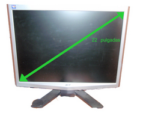
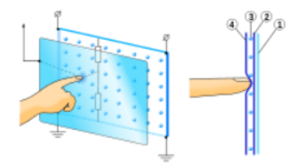

Periféricos#
Periféricos#
Se entenderá por periférico al conjunto de dispositivos que, sin pertenecer al núcleo fundamental de la computador, permitan realizar operaciones de entrada/salida (E/S) complementarias al proceso de datos que realiza la CPU.
Tipos de periféricos#
Los periféricos pueden clasificarse en 3 categorías principales:
Periféricos de entrada: Teclado, micrófono, escáner, mouse, webcam, etc.
Periféricos de salida: Impresora, Monitor, Altavoces, etc.
Periféricos de entrada/salida (E/S): Disco duro, Memoria flash, Grabadora y/o lector de CD, etc.
A continuación vemos algunos periféricos y alguna de sus principales características.
Teclado#
El teclado estándar en español corresponde al diseño llamado QWERTY.
Se han sugerido distintas alternativas a la disposición de este teclado, indicando ventajas tales como mayores velocidades de tecleado. La alternativa más famosa es el Teclado Simplificado Dvorak.

Cómo funciona
Cada vez que se presiona una tecla, una señal específica se transmite al equipo. El teclado a su vez, utiliza una red de barras cruzadas para identificar cada tecla en función de su fila y columna

Al presionarse una tecla, se produce un contacto eléctrico entre la fila y la columna. Las señales eléctricas son transmitidas a un microcontrolador, que envía un código (BCD, ASCII o Unicode) al equipo describiendo el carácter que corresponde a dicha tecla.
Tipos de teclados#
Los cuatro tipos de teclados para PC más importantes son:
El teclado de 83 teclas (PC/XT)

El teclado de 84 teclas (PC/AT)
El teclado de 102 teclas, llamado teclado extendido

El teclado de 105 teclas es compatible con Microsoft Windows 95.

Mouse#
Los elementos esenciales del mouse óptico son, básicamente, una pequeña cámara (que toma unas 1.500 imágenes por segundo), un diodo emisor de luz roja (LED) y un software de procesamiento digital de imagen en tiempo real (DSP). El LED ilumina la superficie sobre la que se arrastra el ratón. Esta luz es reflejada sobre la superficie y es capturada por el sensor CMOS. Este sensor envía cada imagen a un procesador digital de señales (DSP) para que las analice. El DSP es capaz de detectar patrones en las imágenes y ver como estos patrones se movieron con respecto a la última imagen. Basado en el cambio de patrones en una secuencia de imágenes el DSP determina cuánto se movió el mouse y envía las coordenadas correspondientes a la computador.
Monitor#
Pantalla de cristal líquido o LCD (Liquid Crystal Display). Están formadas por cinco filtros. Dos de ellos son filtros polarizantes con filas de cristales líquidos alineadas perpendicularmente entre sí, de forma que al aplicar o dejar de aplicar corriente eléctrica a los filtros, se consigue que la luz pase o no pase a través de ellos, dependiendo de si el segundo filtro bloquea o no el paso de la luz que ha atravesado el primero. Los otros tres filtros (RGB) se utilizan para la obtención de la gama de colores, mediante la aplicación de variaciones de voltaje sobre ellos producen distintos brillos intermedios entre presencia o ausencia de luz
Pantalla de plasma o PDP (Plasma Display Panel) Su sistema consta de múltiples y diminutas celdas que se sitúan entre dos paneles de cristal compuestos por una mezcla de gases
TFT «Thin Film Transistor» ó transistor de película delgada. Se trata de una tecnología basada en transistores de efecto de campo, esto es, se coloca sobre una placa de cristal un electrodo (lamina que conduce electricidad), sobre la cuál se colocan capas delgadas, y al activarse por medio del electrodo cada una, se van activando los colores, formándose de esta forma cada píxel.
LED: pantallas de diodos LED. e caracteriza por estar compuesto por diodos emisores de luz o leds
Un diodo orgánico de emisión de luz u OLED (siglas en inglés de organic light-emitting diode) es un tipo de diodo que se basa en una capa electroluminiscente formada por una película de componentes orgánicos que reaccionan a una determinada estimulación eléctrica, generando y emitiendo luz por sí mismos.
Especificaciones
Resolución: el número de píxeles que puede mostrar la pantalla, por ejemplo 640 x 480 (640 píxeles de largo, 480 píxeles de ancho)
El tamaño: se calcula al medir la diagonal de la pantalla y se expresa en pulgadas (una pulgada equivale aproximadamente a 2,54 cm), por ejemplo 17 pulgadas tenemos una diagonal de aproximadamente 43 cm;
La frecuencia de refresco: es la velocidad con la que se refresca la información de la pantalla. A mayor frecuencia de refresco mayor resolución y obtenemos imágenes más estables y nítidas. Las frecuencias de refresco que se consideran dentro de lo habitual son las que se encuentran entre los 60Hz y 70Hz, si se utilizan frecuencias por encima de los 70Hz, como por ejemplo 75, 80 o 90 Hz se estará trabajando con el mínimo de fatiga visual Ejemplo, para una resolución de 1024 x 768 su frecuencia de refresco no debe estar por debajo de 75Hz
Pantallas táctiles#
Resistivas: Son más baratas y no les afectan el polvo ni el agua y, además de ser más precisas, pueden ser usadas con un puntero o con el dedo o guante genérico. Sin embargo, tienen hasta un 25% menos de brillo y son más gruesas, por lo que están siendo sustituidas por otras en los dispositivos móviles que precisan un tamaño y un peso ajustados y mayor brillo en la pantalla por la posibilidad de estar expuestos a la luz directa del sol.
Capacitivas: Basadas en sensores capacitivos, consisten en una capa de aislamiento eléctrico, como el cristal, recubierto con un conductor transparente. Como el cuerpo humano es también un conductor eléctrico, tocando la superficie de la pantalla resulta una distorsión del campo electrostático de la pantalla, la cual es medida por el cambio de capacitancia (capacidad eléctrica). Diferentes tecnologías pueden ser usadas para determinar en qué posición de la pantalla fue hecho el toque.

Impresora#
Las más comunes son:
La impresora de inyección de tinta. Utilizan inyectores que producen una pequeña burbuja que sale eyectada como una gota muy fina. La inyección de tinta se realiza de dos formas distintas: método térmico y método piezoeléctrico.

La impresora láser. Un rodillo carga positivamente las hojas. El láser carga positivamente ciertos puntos del tambor gracias a un espejo giratorio. Luego se deposita la tinta con carga negativa en forma de polvo (tóner) en las distintas partes del tambor que el láser cargó previamente.

Ventajas:
Las impresoras láser son mucho más rápidas que las de inyección de tinta.
Tienen una mayor definición y el TONER es más económico que la tinta, lo que las hace más rentables para una oficina, donde se imprimen gran cantidad de documentos diariamente.
Desventaja principal:
El precio es más elevado que las impresoras de chorro de tinta.
Impresora térmica. Una impresora termica se basa en una serie de agujas calientes que van recorriendo un papel termosensible que al contacto se vuelve de color negro. Son muy usadas en los cajeros y supermercados por su bajo coste.
La impresora generalmente se caracteriza por los siguientes elementos:
Velocidad de impresión: expresada en páginas por minuto (ppm), la velocidad de impresión representa la capacidad de la impresora para imprimir un gran número de páginas por minuto.
Resolución: expresada en puntos por pulgada (abreviado dpi), resolución significa la nitidez del texto impreso.
Memoria integrada: la cantidad de memoria que le permite a la impresora almacenar trabajos de impresión. Cuanto más grande sea la memoria, más larga podrá ser la cola de la impresora.
Formato de papel: según su tamaño, las impresoras pueden aceptar documentos de diferentes tamaños, por lo general aquellos en formato A4 (21 x 29,7 cm), y con menos frecuencia, A3 (29,7 x 42 cm).
La bandeja de alimentación, que utiliza una fuente interna de alimentación de papel.
Cartuchos: los cartuchos raramente son estándar y dependen en gran medida de la marca y del modelo de la impresora.
Interfaz: cómo se conecta la impresora al equipo. Las principales interfaces son:
USB
Paralelo
Red: este tipo de interfaz permite que varios equipos compartan una misma impresora. También existen impresoras WiFi disponibles a través de una red inalámbrica
Scanner#
Se utiliza para introducir imágenes de papel, libros, negativos o diapositivas. Una de las características más relevantes de la calidad de un escáner es la resolución, medida en píxeles por pulgada (ppp). Los fabricantes de escáneres en vez de referirse a la resolución óptica real del escáner, prefieren hacer referencia a la resolución interpolada, que es mucho mayor gracias a la interpolación software. La mayoría de los escáneres económicos pueden capturar internamente imágenes con 30 bits (1.000’000.000 de colores) o 36 bits (68.000’000.000), pero las imágenes son luego almacenadas solamente con 24 bits. Los escáneres más costosos almacenan la imagen con 30 y 36 bits.
Tarjetas de TV#
DVB-T : Estándar para la transmisión de televisión digital terrestre. Este sistema transmite audio, video y otros datos a través de un flujo MPEG-2
DVB-S : Emisiones desde satélites geoestacionarios.
DVB-C : Emisiones por redes de cable.
Webcam#

Es una pequeña cámara digital conectada a una computadora la cual puede capturar imágenes.
Características:
Resolución máxima de transmisión para la mayoría de webcams de gama media/alta es de 640 x 480. Pero esto sólo no es suficiente, tan importante como la resolución es conseguir que la imagen se transmita lo suficientemente rápido y sin perdida de calidad, y para ello necesitaremos que la cámara, si dispone de suficiente ancho de banda, sea capaz de generar hasta 30 fotogramas por segundo.
Para probar la óptica, es conveniente situarse a diferentes distancias para comprobar la diferencia de calidad en la imagen y la posibilidad de enfocar
Aunque la mayoría de las cámaras que ofrecen una resolución elevada ya vienen con conexión USB 2.0 (más rápida, hasta 480 Mb/s), podemos encontrarnos con algunas que todavía no están adaptadas a esta conexión, lo que podría generarnos cuellos de botella en el envío de imágenes de la webcam al ordenador.
En algunos casos, podemos encontrarnos con que queremos tener la cámara lejos del PC, y podemos tener problemas con la señal a través del puerto USB. Para esta circunstancia especial, existen cámaras basadas en tecnología inalámbrica que nos permiten situarlas hasta a 100 metros de distancia de nuestro equipo. Son perfectas como dispositivos de vigilancia o para realizar videoconferencias en lugares diferentes a donde tenemos el equipo.
Las webcams están ampliando sus usos, y a parte de videoconferencias por Internet, se están empezando a utilizar como cámaras de seguridad. Ahora podemos encontrar modelos incluso con visor infrarrojo para poder ver de noche.
Proyector de vídeo#
Proyector LCD: este es el sistema más simple, por lo que es uno de los más comunes y asequibles para cine en casa y el uso del negocio. Su problema más común es el efecto pixelado, a pesar de los avances recientes han reducido la gravedad de este efecto.

Proyector DLP (Digital Light Processing) contiene una matriz rectangular de hasta 2 millones de espejos microscópicos pivotantes y cada uno de esos microespejos mide menos de una quinta parte del ancho de un cabello humano. Los espejos pueden reflejar una imagen digital en una pantalla u otra superficie.

Proyectores de LED utilizan una de las tecnologías antes mencionadas para la creación de imagen, con la diferencia de que utilizan una matriz de diodos emisores de luz como fuente de luz, eliminando la necesidad de cambiar la lámpara.

Sistemas biométricos.#
¿Qué es? La Biometría es una tecnología que utiliza alguna característica biofísica de la persona para ser identificada.
Cada individuo posee una información biológica que lo diferencia de los demás y lo hace único. Un dispositivo de identificación biométrica verifica automáticamente la identidad de la persona mediante la medición de sus características físicas.Las técnicas biométricas más conocidas son nueve y están basadas en los siguientes indicadores biométricos:
Rostro

Termo grama del rostro

Huellas dactilares
Geometría de la mano

Venas de las manos

Patrones de la retina

Iris

Voz

Firma

Controlador de Dispositivo o Drivers#
Un controlador de dispositivo (llamado normalmente controlador, o, en inglés, driver) es un programa informático que permite al sistema operativo interaccionar con un periférico, haciendo una abstracción del hardware y proporcionando una interfaz «posiblemente estandarizada» para usarlo.